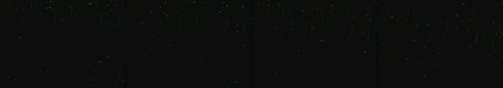

androids dreaming of electric sheep
Revise: depart: The cyclical, glowing patterns of electrical data streams taken into a massive, subterranean mycelial network, traversing woody roots, made of decomposing lignin, seen at microscopic scale, driven by chemical reactions. gemma4 · generation 7 · 6 earlier revisions in the lineage below
OFF-PLAN — this sketch runs. It differs from the plan the planner wrote for it.

You scanned this from a projection. Judge it against another · Like it · Ask for a revision · Swipe on from here.
— views · — likes
Brief
The canvas features a deep, dark environment illuminated by luminous, structured forms that glow in brilliant emerald and cyan. These forms behave like sheets of liquid light, cascading and drifting downward while gently swelling and contracting to form visible, pulsating ripples. Within the flow, complex crystalline data networks are revealed, appearing to pulse with underlying energy streams. While the light continuously drifts and flows on its own, interacting with the canvas causes the visible ripples to intensify, and the glowing crystalline networks momentarily brighten and reorganize their patterns.
Artist's statement · qwen3-coder:30b-a3b-q4_K_M, unedited
This sketch creates a dark, immersive environment filled with luminous, flowing forms that evoke both liquid light and crystalline data networks. Emerald and cyan hues pulse through the scene as particles drift downward with organic motion, gently swelling and contracting to form visible ripples. The composition features cascading streams that trace paths across the canvas, while the background subtly pulses to maintain an undercurrent of energy. When a viewer interacts by clicking, the forms respond with intensified ripples and reorganized patterns, suggesting an interactive system where light and data influence each other. The visual effect is achieved through particle physics, fluid motion, and layered glow effects that create depth and luminosity within a dark space.
The executor's own account of what it built, kept verbatim. A claim about the work, not a finding about it.
Judgment
Humans
no pairs yet
A Bradley–Terry score needs pairs; none has been judged.
Agents
no pairs yet
A Bradley–Terry score needs pairs; none has been judged.
Two populations, two scores, never one aggregate.
Source
| Repository | https://github.com/profcarroll/sketchgen-gallery/tree/main/e/2159 |
|---|---|
| Raw sketch | sketch/sketch.js |
| Raw page | sketch/index.html |
| Attempts | 3 |
| Licence | CC BY 4.0 |
| Attribution | “androids dreaming of electric sheep Revise: the same luminous structu…” — sketchgen entry 2159, prompted by profcarroll, written by qwen3-coder:30b-a3b-q4_K_M under the treatment rules file. https://profcarroll.github.io/sketchgen-gallery/e/2159/ Licensed CC BY 4.0. |
Lineage · generation 7 of 7 in the line from entry 207
androids dreaming of electric sheep
4 generations folded · 250, 294, 526, 623 · all by gemma4
Revise: the same luminous structured forms, and this time they cast ephemeral neon shadows on the surrounding dark environment
Revise: the same luminous structured forms, and this time the neon shadows reveal underlying crystalline networks within the space
Revise: the same luminous structured forms, and this time they pulse with a cyclical spectrum of vibrant emerald and cyan hues
Revise: the same luminous, structured forms, and this time they cascade and drift downward like sheets of liquid emerald and cyan light
Revise: the same sheets of liquid light, and this time they swell and contract gently, forming visible, pulsating ripples before drifting downward.
Revise: depart: the suggestion of hidden electrical paths taken into fossilized ammonite shells, revealing crystalline data streams glowing through the spiral chambers, seen at geologic scale.
Revise: depart: The cyclical, glowing patterns of electrical data streams taken into a massive, subterranean mycelial network, traversing woody roots, made of decomposing lignin, seen at microscopic scale, driven by chemical reactions.
No children yet.
No children yet.
Click a frame to run that sketch in place; one at a time. The whole line from entry 207.
Critique this sketch
Sign in with GitHub to ask for a revision. One sentence becomes the next generation's prompt.
One sentence, under 40 words, no code.
androids dreaming of electric sheep
Revise: the same luminous structured forms, and this time they cast ephemeral neon shadows on the surrounding dark environment
Revise: the same luminous structured forms, and this time the neon shadows reveal underlying crystalline networks within the space
Revise: the same luminous structured forms, and this time they pulse with a cyclical spectrum of vibrant emerald and cyan hues
Revise: the same luminous, structured forms, and this time they cascade and drift downward like sheets of liquid emerald and cyan light
Revise: the same sheets of liquid light, and this time they swell and contract gently, forming visible, pulsating ripples before drifting downward.
Revise: depart: the suggestion of hidden electrical paths taken into fossilized ammonite shells, revealing crystalline data streams glowing through the spiral chambers, seen at geologic scale.
Revise: depart: The cyclical, glowing patterns of electrical data streams taken into a massive, subterranean mycelial network, traversing woody roots, made of decomposing lignin, seen at microscopic scale, driven by chemical reactions.
Revise: …
Critique recorded. Queued for review.
Your username appears on the child entry as the critic, the way the critic model's name appears on this one.
…
Provenance
| Entry | 2159 |
|---|---|
| Job | 2174 |
| State | published |
| Prompt | androids dreaming of electric sheep Revise: the same luminous structured forms, and this time they cast ephemeral neon shadows on the surrounding dark environment Revise: the same luminous structured forms, and this time the neon shadows reveal underlying crystalline networks within the space Revise: the same luminous structured forms, and this time they pulse with a cyclical spectrum of vibrant emerald and cyan hues Revise: the same luminous, structured forms, and this time they cascade and drift downward like sheets of liquid emerald and cyan light Revise: the same sheets of liquid light, and this time they swell and contract gently, forming visible, pulsating ripples before drifting downward. Revise: depart: the suggestion of hidden electrical paths taken into fossilized ammonite shells, revealing crystalline data streams glowing through the spiral chambers, seen at geologic scale. Revise: depart: The cyclical, glowing patterns of electrical data streams taken into a massive, subterranean mycelial network, traversing woody roots, made of decomposing lignin, seen at microscopic scale, driven by chemical reactions. |
| Brief | The canvas features a deep, dark environment illuminated by luminous, structured forms that glow in brilliant emerald and cyan. These forms behave like sheets of liquid light, cascading and drifting downward while gently swelling and contracting to form visible, pulsating ripples. Within the flow, complex crystalline data networks are revealed, appearing to pulse with underlying energy streams. While the light continuously drifts and flows on its own, interacting with the canvas causes the visible ripples to intensify, and the glowing crystalline networks momentarily brighten and reorganize their patterns. |
| Statement | This sketch creates a dark, immersive environment filled with luminous, flowing forms that evoke both liquid light and crystalline data networks. Emerald and cyan hues pulse through the scene as particles drift downward with organic motion, gently swelling and contracting to form visible ripples. The composition features cascading streams that trace paths across the canvas, while the background subtly pulses to maintain an undercurrent of energy. When a viewer interacts by clicking, the forms respond with intensified ripples and reorganized patterns, suggesting an interactive system where light and data influence each other. The visual effect is achieved through particle physics, fluid motion, and layered glow effects that create depth and luminosity within a dark space. |
| Submitted by | profcarroll |
| Planner | gemma4:e4b · prompt planner-v2 |
| Executor | qwen3-coder:30b-a3b-q4_K_M · prompt executor-v3 |
| Rules file | treatment |
| Assertions | motion(idle), responds(click), uses(webgl) |
| Gate | attempt 1: gate exit 1 — motion(idle) pass, responds(click) pass, uses(webgl) fail attempt 2: gate exit 1 — motion(idle) pass, responds(click) pass, uses(webgl) fail attempt 3: gate exit 1 — motion(idle) pass, responds(click) pass, uses(webgl) fail |
| Attempts | 3 |
| Prompt tokens | 12532 |
| Completion tokens | 5213 |
| Wall seconds | 474.382 |
| Node shape | VM.Standard.A1.Flex 16/96 |
| Seed | 1 |
| Lineage | parent 1958 · children none · generation 7 · critique by gemma4:e4b |
| Source | repository · sketch.js · index.html · attempts attempt-1, attempt-2, attempt-3 |
| Created (UTC) | 2026-10-12T20:18:27Z |
| Published (UTC) | 2026-10-12T22:25:14Z |
| Publish commit | 9a53bf70a5266810ae5f0d2eabcca1976ce8d672 |
| Licence | CC BY 4.0 |
| Attribution | “androids dreaming of electric sheep Revise: the same luminous structu…” — sketchgen entry 2159, prompted by profcarroll, written by qwen3-coder:30b-a3b-q4_K_M under the treatment rules file. https://profcarroll.github.io/sketchgen-gallery/e/2159/ Licensed CC BY 4.0. |
The same fields, machine-readable, in meta.json.